寫java前的環境設定?
用記事本+提示命令字元 執行java程式碼
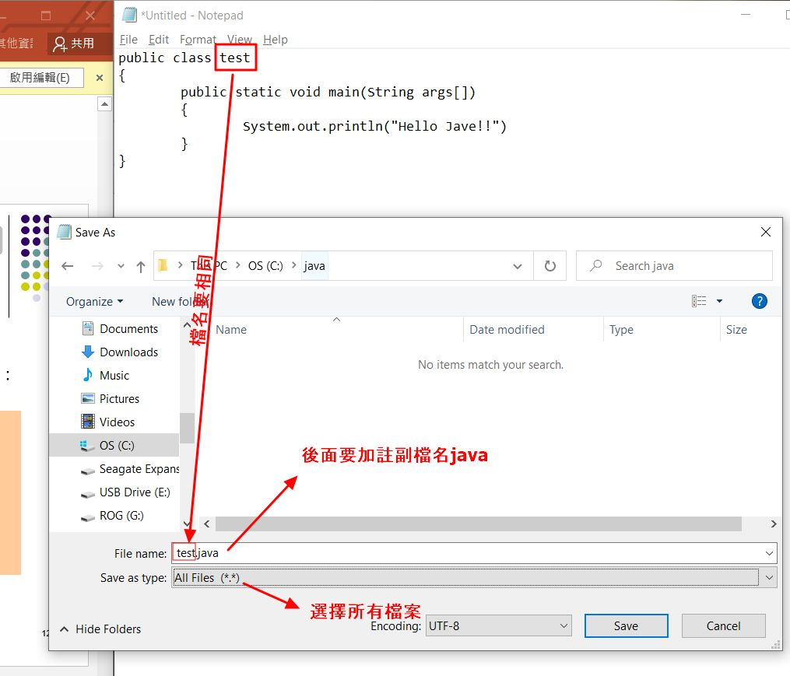變數在println裡面要加上什麼連結號?

寫java程式起手式的程式碼是什麼?

什麼是println?
如果在程式碼旁下註解要寫什麼?

寫java 如何縮排增加可讀性

在寫程式時註解內容很多行，要如何下註解?

如何宣告讓變數，不能再更改?

型態為long，但變數大於int範圍該如何做?

如何寫型態範圍最大值的程式碼?

什麼是溢位?

長整數寫法?

整數寫法?

短整數寫法?

位元寫法?

字元寫法?

布林值寫法?

浮點數寫法?

倍精度寫法?

單一字元如何表示?

換頁寫法?

退格寫法?

如何換行?

歸位寫法?

跳格寫法?

char + int 會如何?

如何強制轉換資料型態?

-5.6e64中的e64表示什麼?

宣告浮點數要做什麼?

空格如何表示?

129/64.0f 會轉換成什麼資料型態?

設定java開發工具介面
如果java程式執行時，要如何暫停程式?

應輸入數值，但卻輸入字元產生的錯誤訊息

一條敘述中的元素有哪些?

如何取補數?

not運算字符要打什麼?

如何取餘數?

如何寫if敘述?

如何寫大於等於和小於等於?

如何寫等於和不等於

如何寫遞增(加1)和遞減(減1)

前置遞增的有什麼執行結果?

後置遞增的有什麼執行結果?

and;且 的表示字符是什麼?

OR;或的表示字符是什麼?

And與OR真值表

And與OR真值表2

運算子的優先順序為何?

如何從String字串中取得字元?
運算式簡潔用法?

輸入字串固定要背的敘述是什麼?

什麼是巢狀if敘述?

什麼是條件運算子?

條件if運算範例

什麼是swich敘述?

switch敘述如果不加break會怎樣?

Switch 敘述中使用break特性的簡潔對照寫法


For 迴圈怎麼寫?

For 迴圈範例

若迴圈不設增量，會有什麼效應?

while迴圈怎麼寫?

do while 迴圈怎麼寫?

什麼是巢狀迴圈?

迴圈中的break如何使用?

迴圈中的continue如何使用?

一維陣列長度如何表示?

一維陣列表示方法(最基本)?

一維陣列概念圖

一維陣列的其他寫法

宣告時，如何就設好一維陣列的初值?

一維陣列的範例

陣列的變數實際上是用來做什麼?
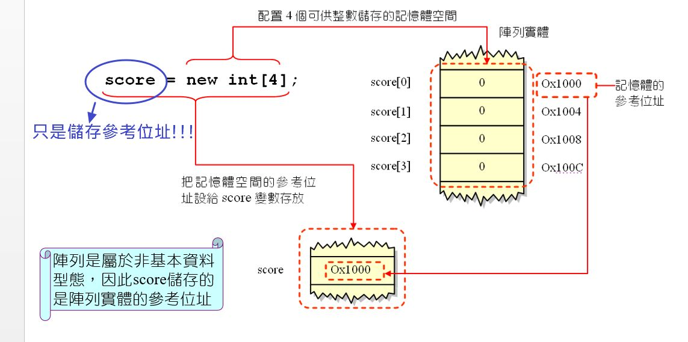二維陣列如何宣告?
二維陣列範例(車輛銷量)
二維陣列如何宣告每列的元素個數不同?
二維陣列範例(第2小題難)
如何宣告三維陣列?
三維陣列 範例
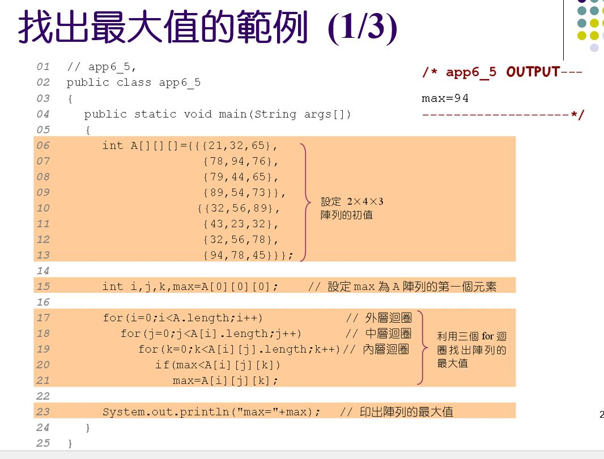兩個陣列的參考位置用什麼比較?
函數如何寫?
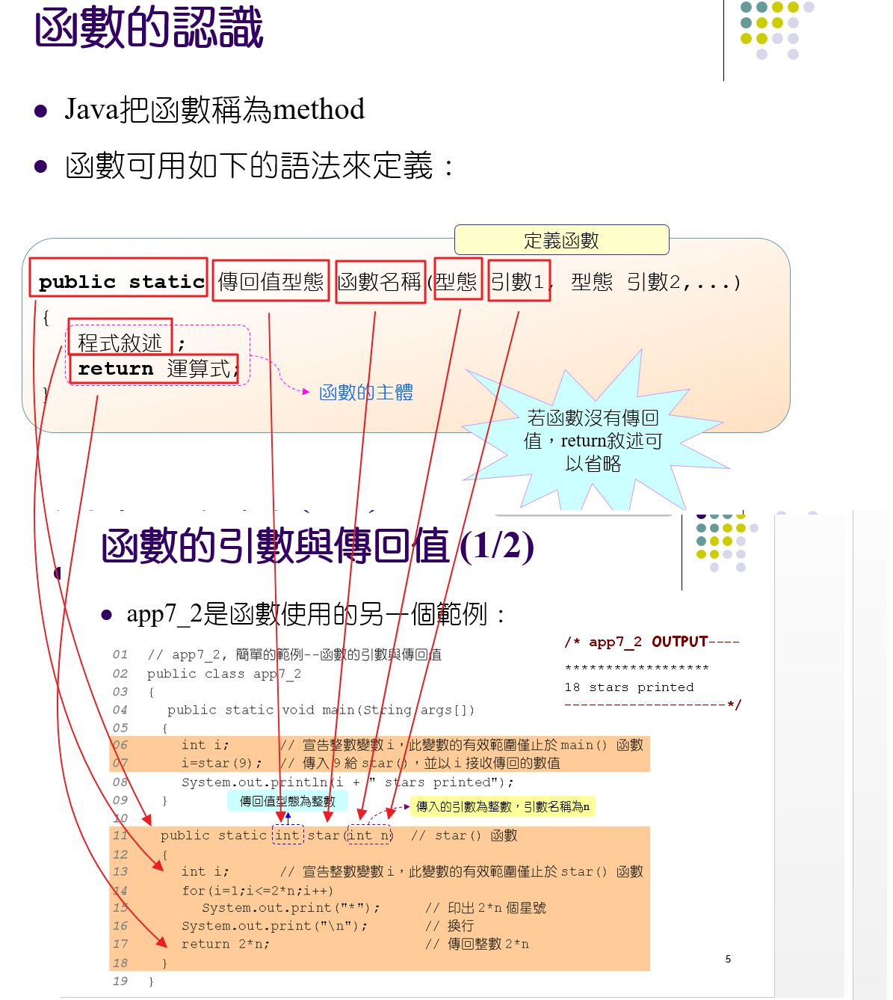回傳值可帶入數學公式
何謂傳值?
如何傳遞一維陣列?

如何傳遞二維陣列?
如何回傳二維陣列?
傳值和傳參照有什麼不同?
傳參照範例
回傳值可以帶入java內建的數學函式
要比較字串是否相符，而不是比較指向的物件要如何做?equals()
什麼是遞迴?
什麼是函數多載(overloading)?
多載的注意事項，引數 和 個數要如何設定?
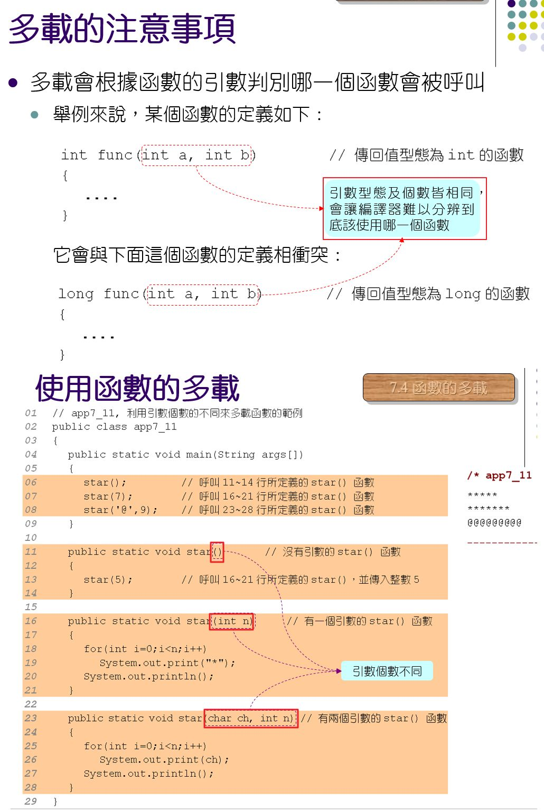類別的基本概念
如何由field(資料成員)建立物件?
由類別所建立的物件稱為該類別的什麼?
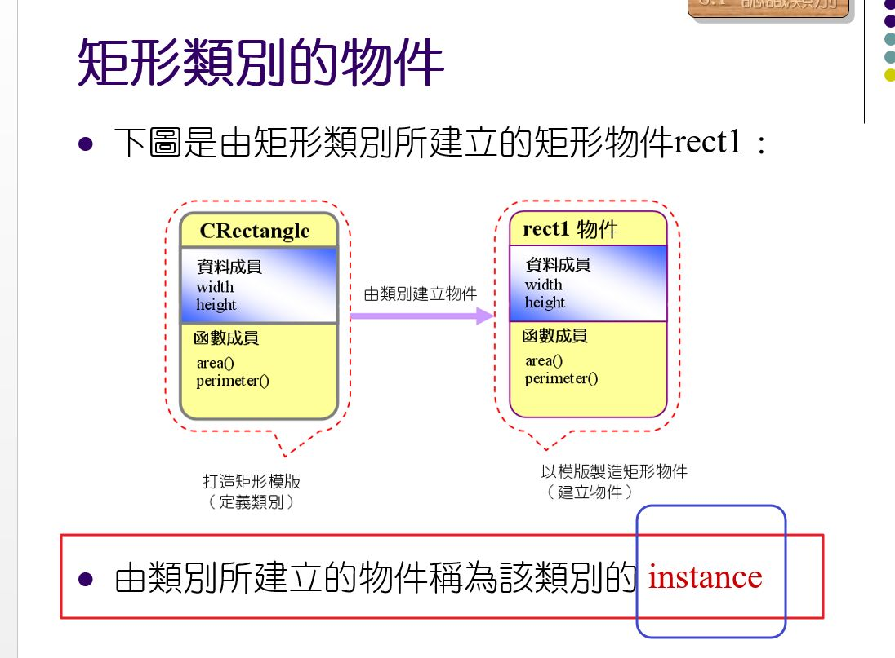如何宣告物件?
(類別、函數、資料)如何存取物件內容?
如何在類別中建立函數?

不同物件成員在記憶體內的配置
this該如何使用?
在main()中用物件呼叫類別內的函數，也可加上this
如何呼叫函數並傳遞引數?
如何傳遞多個引數?
如何傳回值函數?
多載的用途?
從類別外部存取資料可能有安全問題

public 與 private
三種access modifier?

private的位置應該放在哪裡?
什麼是建構元(constructor)?
建構元(constructor)的多載
建構元(constructor)之間呼叫要用什麼？
private建構元(constructor)如何被呼叫?
建構元(constructor)的省略
什麼是實例變數(instance varriable)?
什麼是實例函數(instance method)?
什麼是類別變數(static varriable?)
什麼是類別函數(static method)?
main()裡面的static是什麼意思?
類別函數(static method)的使用限制
設值給類別型態的變數，兩變數指向同一物件
A變數設值給B變數，B產生物件內容改變，A的物件內容也改變
類別型態的變數（包含物件內容）也可以傳遞
由函數回傳類別型態的變數
extends是什麼?
super 是什麼?
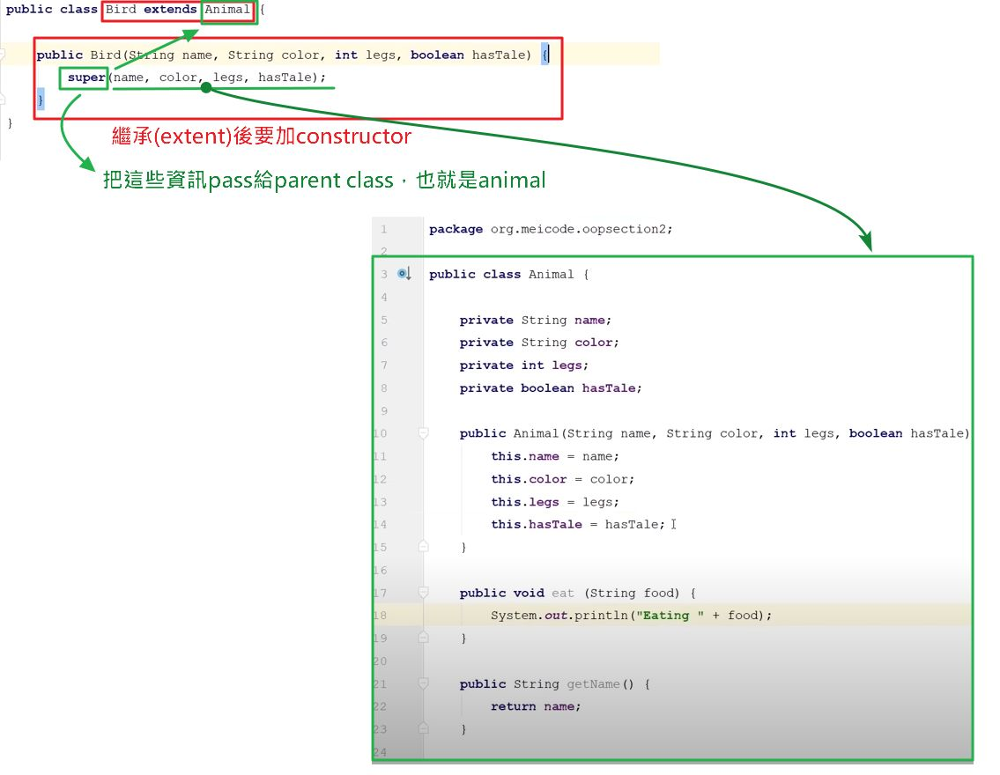extends 可以層層繼承

extend繼承函數後，可以再設新的變數
宣告類別型態的陣列變數，並產生陣列中元素的新物件
傳遞物件陣列到函數
巢狀類別(Nested Classes) 外部類別內中有內部類別(static class)
內部類別(inner class static)編譯後的檔名
（costructor)如果內部類別沒有加上static，該如何建立內部類別的物件?
如何建立匿名內部類別?
匿名內部類別的用法+匿名內部類別的檔案名稱
Java的記憶體回收(garbage collection)
認識繼承(extends)
類別的繼承(extends)，先呼叫建構元(constructor)繼承初始化
繼承(extends)建構元的呼叫，super的用法
this()與super()比較
錯誤使用父類建構元(沒有super)(修正)

巢狀類別(外部類別和內部類別)
Final的用法
建構元(constructor)前面不能打什麼?
Thread的功能
如何用Runnable interface 建立執行緒?
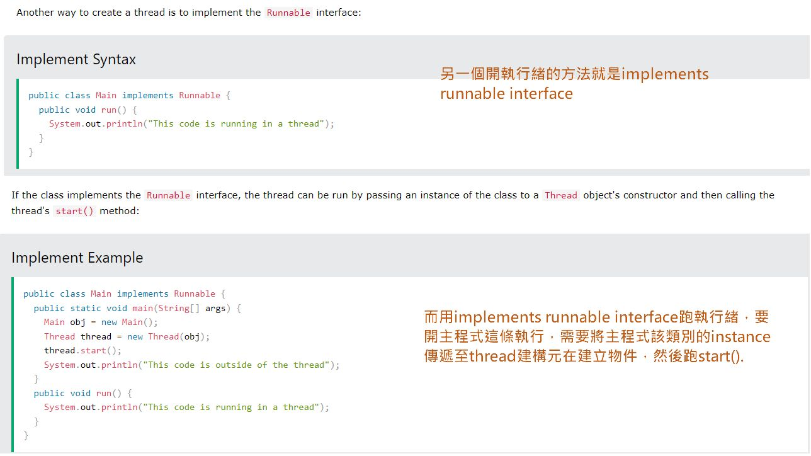什麼是Packages?
什麼是套件(Package)?
什麼是保護成員(protected)?

(overidding)改寫的範例
改寫(overriding)與多載(overloading)的比較
父類別變數存取子類別成員並呼叫子類別method
1.子類別的變數不能指向父類別的物件 2.父類別不能存取子類別自建的method
以父類別變數存取子類別成員的好處在哪裡?
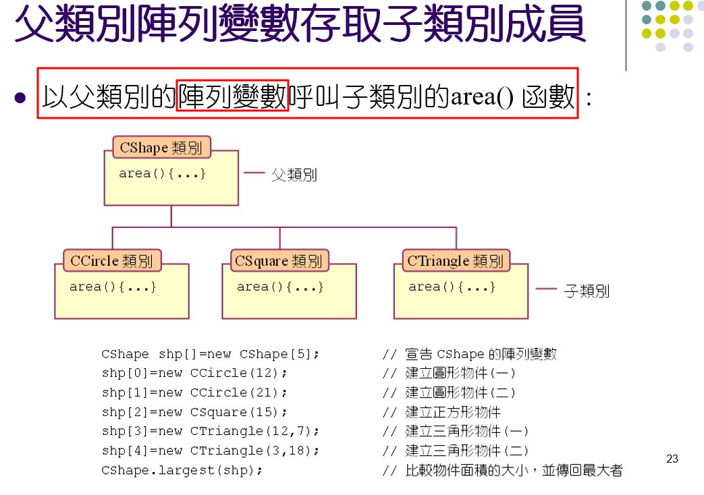用super存取父類別
this印出實例變數
is-a 與 has-a 的意義
中止繼承 final
Object類別之源
Object類別裡的常用函數: getClass()
何謂抽象類別?
(abstract)抽象類別範例
abstract抽象類別中，父類也可建立物件存取子類的成員
abstract 用父類陣列變數存取子類別物件

abstract抽象類別的限制
什麼是介面(interface)?
interface介面的範例
interface介面型態的變數指向「使用介面類別」的物件
interface的多重繼承
interface介面的延伸，介面繼承介面，類別最後實作介面
如何知道物件與某個類別/介面是否有繼承關係(instanceof)?

Package 分別做好兩個java 放在同個資料夾後編譯執行
package 使用範例 / 將寫好的程式放在同一個package
package 檔案合併
存取不同package類別的規定
如何省略規定，用import寫法?
package的階層關係
JCreator Project 建立概念
新增現有程式到Project
類別庫

常用類別庫說明與使用
類別庫的使用-以String類別為例
類別庫的使用-以String Buffer為例
wrapper class 的說明和使用
Math類別函數的說明和使用
什麼是例外(exception)?

exception如何例外處理(try and catch)
Throwable 類別(exception and error之源)
exception捕捉一個以上例外 或 所有例外
exception例外的拋出(throw)
exception由函數拋出例外 throws
exception自行撰寫例外
IOexception例外類別+範例
什麼是串流(Stream)?
如何讀取文字檔(FileReader)?
如何寫入檔案(FileWriter)?
什麼是緩衝區(Buffered Reader)讀入資料+範例?
什麼是緩衝區(Buffered Writer)寫入資料+範例?
讀入串流(FileInput Stream)
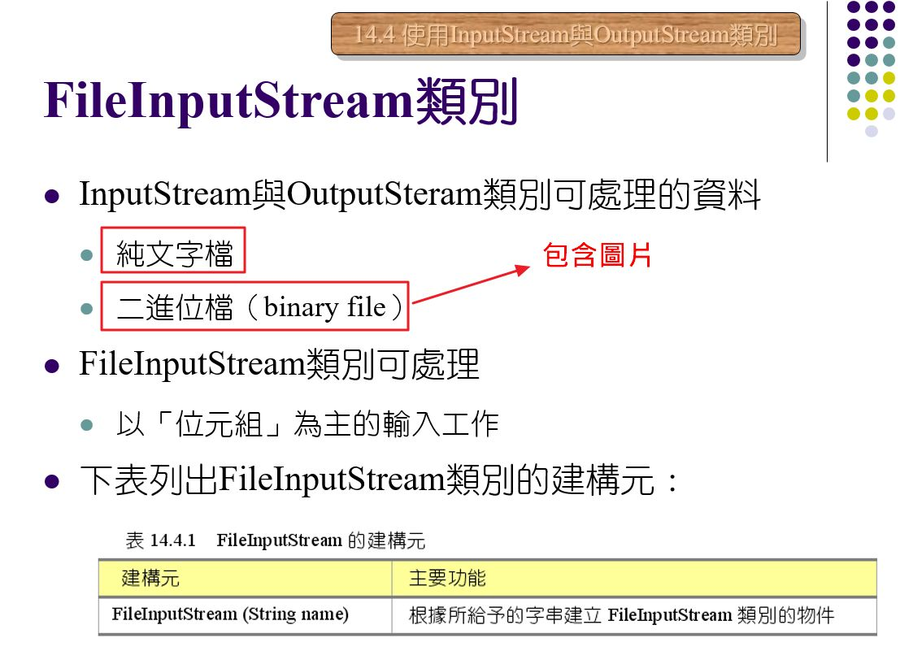寫入串流(FileOutput Stream)(仿照另存新檔)
Thread 什麼是執行緒?
以interface Runnable建立執行緒
Thread執行緒的狀態
thread 跑執行緒的優先順序
Thread錯誤的執行緒+如何修正
Collection集合物件概念介紹
generic泛型與collection
不同集合類別的特性
Collection 關於 HashSet類別
Collection 關於TreeSet類別
關於LinkedList類別
Collection關於List介面
Collection關於ArrayList類別
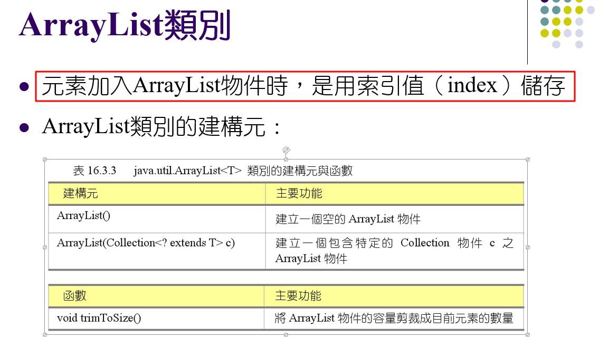(Collection)Map 介面說明
Collection 關於HashMap 類別
Collection 關於 TreeMap類別
for-each迴圈說明
關於Iterator介面(走訪元素)
關於ListIterator介面(走訪元素:可雙向走訪)
AWT 視窗程式範例 4種寫法
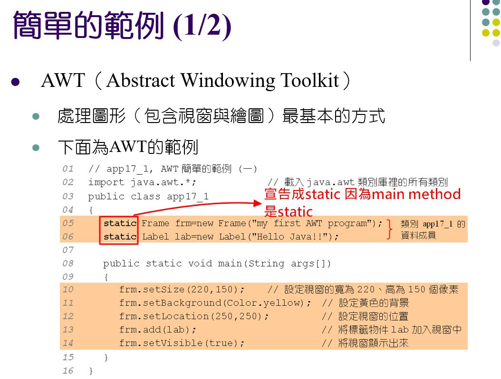java.awt類別庫
AWT-java.awt.Component類別
AWT-Container類別
AWT-Frame類別
AWT-Label類別
AWT-版面配置範例
AWT-Button類別
AWT-關於check box
Text文字輸入的類別
TextField類別的建構元與函數+ 範例應用
TextArea建立文字區+範例應用
版面配置 + BorderLayout邊界版面配置
CardLayout 處理多層版面配置
流動式版面配置範例
GridLayout類別使用範例
Panel面板 + 繪製小計算機
監聽觸發事件(委派事件)說明(重要)
監聽觸發事件(委派事件)說明-匿名類別物件寫法
事件與傾聽者之method說明
出發動作之後，所拋出來的物件 說明!!!!!!!!
ItemEvent類別 選項事件說明 以CheckBox為範例
Text Event文字事件 + 範例
KeyEvent 按鍵事件類別 KeyListener介面 和 KeyAdapter 類別2種範例

MouseEvent 滑鼠事件類別 MouseListener & MouseMotionListener介面 和 MouseAdapter & MouseMotionAdapter 類別2種範例
WindowEvent 視窗事件類別 WindowListener介面 & WindowAdapter類別 2種說明
List 類別 + ItemEvent / ItemListener
Choice 類別 下拉選單 說明範例

Menu類別 功能表MenuItem、MenuBar、Menu 範例說明
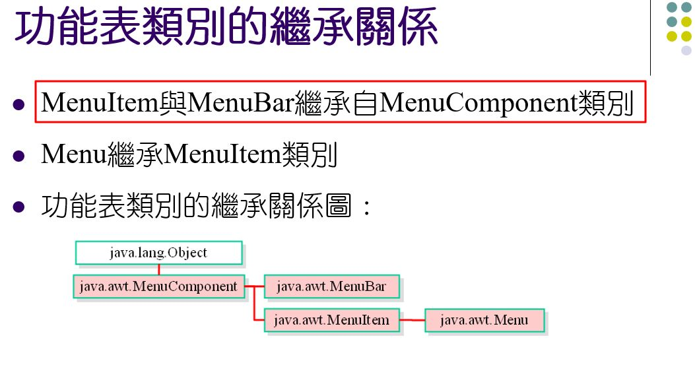Scrollbar 類別 AdjustmentListener 說明+範例
Dialog類別 對話方塊
FileDialog 檔案對話方塊 範例+說明
(InetAddress)如何取得IP位址 和 Hostname?
URL 類別: 載入URL檔案內容getContent() + URL connection 類別
(Socket)主從架構運作 Server端 和 Client端 資料傳輸